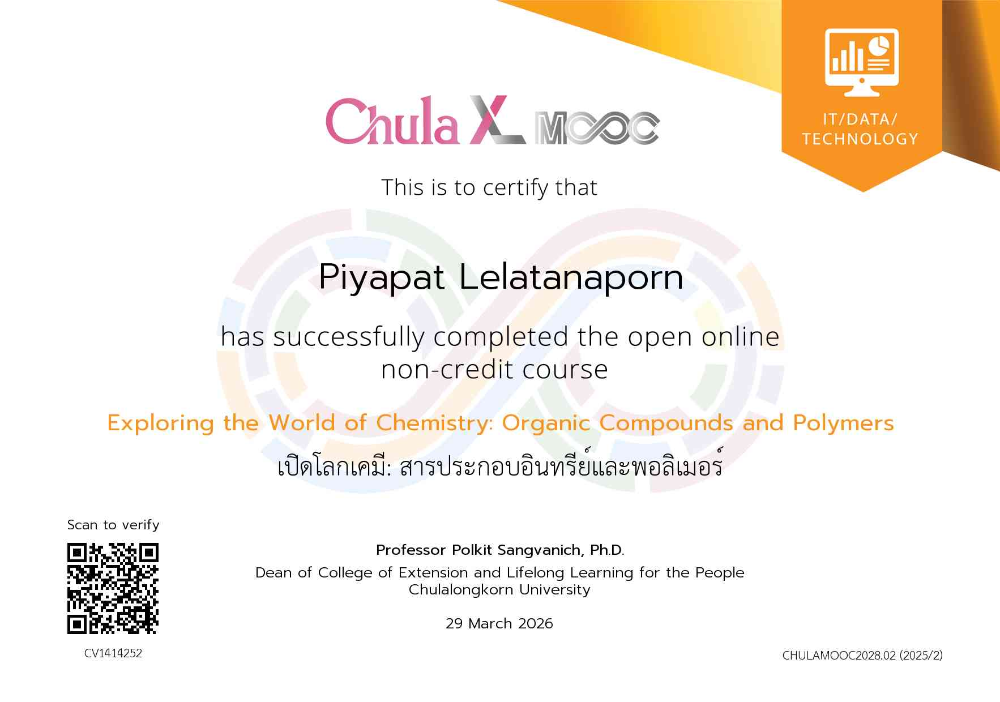

นายปิยพัทธ์ ลีลาทนาพร
คำนำ
ยินดีต้อนรับสู่แฟ้มสะสมผลงาน (Portfolio) ของข้าพเจ้า เว็บไซต์นี้จัดทำขึ้นเพื่อรวบรวมข้อมูลส่วนตัว ประวัติการศึกษา ความสนใจ ความรู้ และทักษะความสามารถพิเศษ เพื่อนำเสนอตัวตน ความตั้งใจ และการเรียนรู้ที่ผ่านมา หวังว่าผู้เข้าชมจะได้รู้จักตัวตนและความมุ่งมั่นของข้าพเจ้ามากยิ่งขึ้น
ประวัติส่วนตัว
ความสนใจ
มีความสนใจในวิชาเคมีและชีววิทยา โดยเฉพาะเรื่องกลไกการทำงานของร่างกายมนุษย์ และสารเคมีกับยารักษาโรคเข้าไปออกฤทธิ์กับระบบต่างๆ ในร่างกายได้อย่างไร นอกจากนี้ยังชอบการเรียนรู้ผ่านการลงมือทำจริง การทำทดลองในห้องแล็บ และการสังเกตผลอย่างเป็นระบบ เพื่อหาคำตอบและเข้าใจความเชื่อมโยงของสิ่งต่างๆ ด้วยตัวเอง
ประวัติการศึกษา
ระดับมัธยมศึกษาตอนปลาย
โรงเรียนบ้านบึง "อุตสาหกรรมนุเคราะห์"
แผนการเรียน วิทย์-คณิต ( MSEP )เกียรติบัตร & ประกาศนียบัตร

เปิดโลกเคมี: สารประกอบอินทรีย์และพอลิเมอร์
เรียนออนไลน์ผ่าน Chula MOOCผ่านหลักสูตรเกี่ยวกับพื้นฐานเคมี โดยเนื้อหาหลักเกี่ยวกับสารประกอบอินทรีย์และพอลิเมอร์ ได้ทำความเข้าใจเกี่ยวกับคุณสมบัติ โครงสร้าง และการนำไปใช้ในชีวิตประจำวันที่ได้รับจากการเรียน:
- ได้รู้จักพื้นฐานของสารประกอบอินทรีย์และพอลิเมอร์
- เข้าใจโครงสร้างและคุณสมบัติของสาร
- เห็นตัวอย่างการนำความรู้ทางเคมีไปใช้ในชีวิตประจำวัน
- ฝึกเรียนรู้และทำความเข้าใจเนื้อหาด้วยตัวเองผ่านระบบออนไลน์